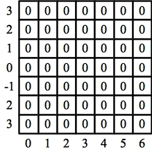
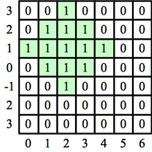
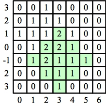

If you look at the constraints, the potential (X,Y) values in this problem are from -200 to 200 for both X and Y. That's 40,000 potential values. So, make an two dimensional vector of integers, and for each value of X/Y/R, add one to all of the potential places in the vector that would be legal for these values.
At the end, traverse the vector, and every entry whose value is equal to X.size() is a legal place for the Candy store. Count those up and return them.
Let's look at example 2. When we start, here's the relevant part of our vector:
|  |
We first process X[0] = 2, Y[0] = 3 and R[0] = 2. That sets 17 cells equal to one:
|  |
We then process X[1] = 1, Y[1] = -1 and R[1] = 2. That increment 17 more cells:
|  |
As you can see, four of those cells have values equal to X.size() = 2. Therefore, the answer is 4.
Now, one problem is the fact that X[i] and Y[i] can assume negative values, and that's not allowed with vectors. To fix that, go ahead and add 200 to every value of X and Y. Then, the potential X/Y values can be between 0 and 400.
Second, writing that loop to increment the vector's values requires a little care. However, I'm positive you are up to the challenge. Hack it up!